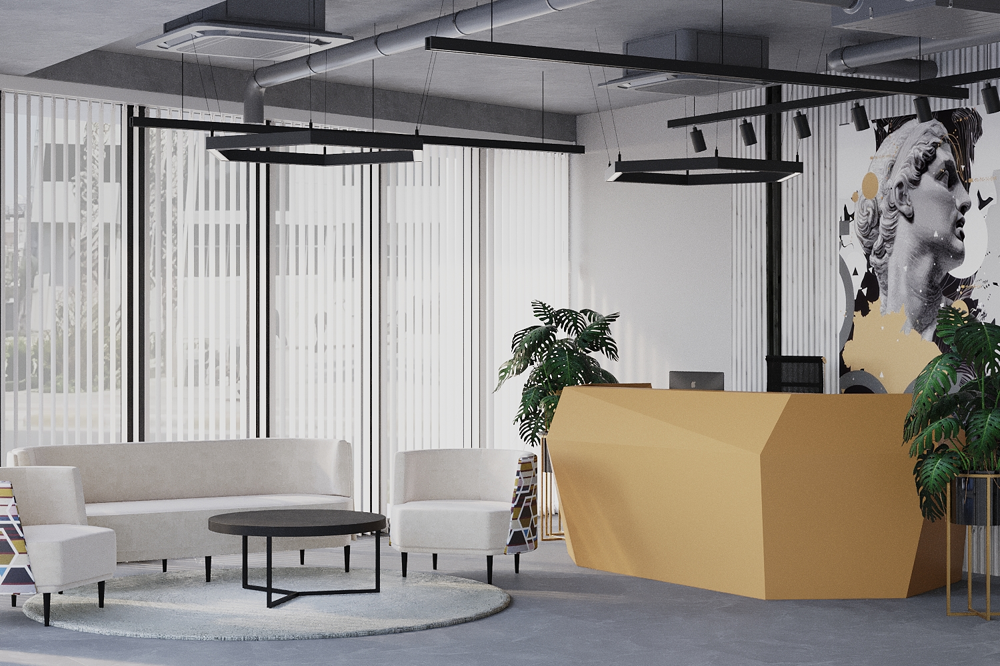
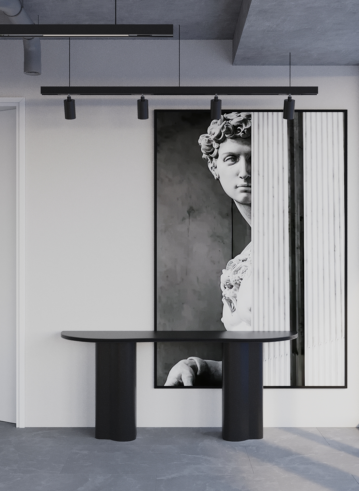

Жилые пространства
Квартиры, частные дома, индивидуальное жильё.
Архитектор | Студия Mars
Современная архитектура на стыке инженерии и эстетики.
Чистая форма, точная логика и выразительное пространство для частных и коммерческих объектов разного масштаба.
О себе
Более 20 лет в архитектуре. Более 400 реализованных проектов.
Работаю с частными и коммерческими объектами разного масштаба — от жилых пространств до сложных специализированных решений.
В основе каждого проекта — точная инженерная логика, чистота формы и внимание к деталям.
Опыт и типы проектов
Квартиры, частные дома, индивидуальное жильё.
Офисы, рестораны, кафе.
Работа с существующей архитектурой и её переосмысление.
Портфолио
Каждый объект — результат точного расчёта и выверенной формы. Минимум лишнего. Максимум смысла.
.jpg)




Видео
Видеофрагмент позволяет увидеть пространство в движении: как работает свет, как считывается масштаб и как интерьер раскрывается в реальном ритме.
Подход
Между технологией и эстетикой. Между задачей и формой. Между конструкцией и ощущением пространства.
Я работаю с простыми и чистыми линиями, создавая решения, которые остаются актуальными во времени. Каждый проект — это живая система, где всё подчинено логике и функции, и при этом сохраняет выразительность и характер.
В основе каждого проекта — человек. Я работаю не с абстрактными метрами, а с образом жизни, привычками, ритмом и характером тех, для кого создаётся пространство.
Каждый раз — это новое прочтение. Новая логика. Новая форма. Через внимательное наблюдение и диалог пространство постепенно обретает свою точность — не только в линиях, но и в смысле.
В результате появляется архитектура, которая не навязывает себя, а точно совпадает с теми, кто в ней живёт или работает.
Контакты
Студия Mars